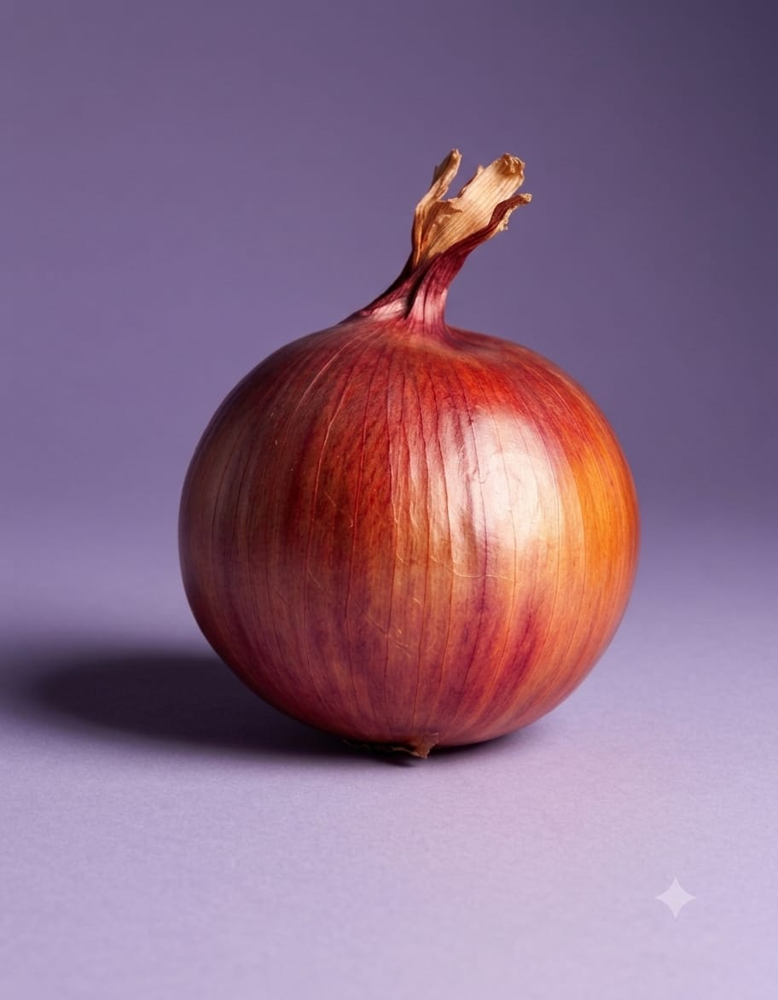
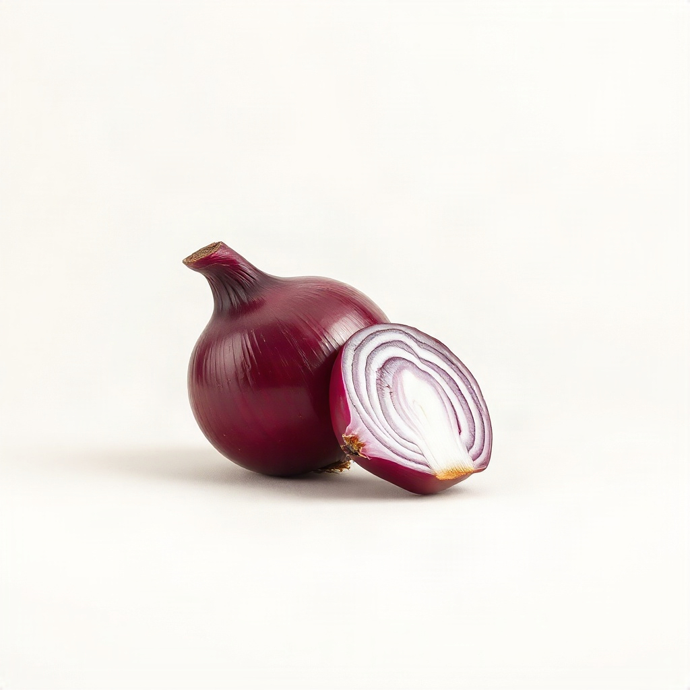
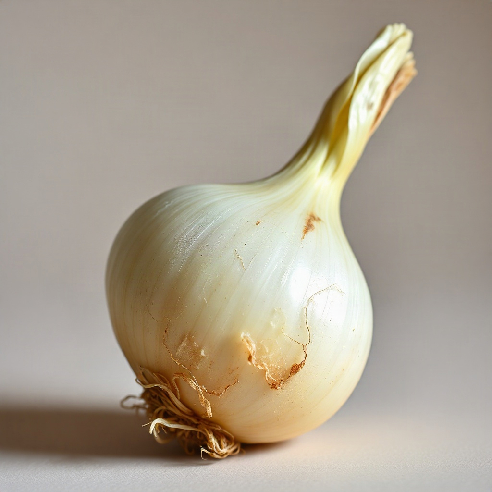
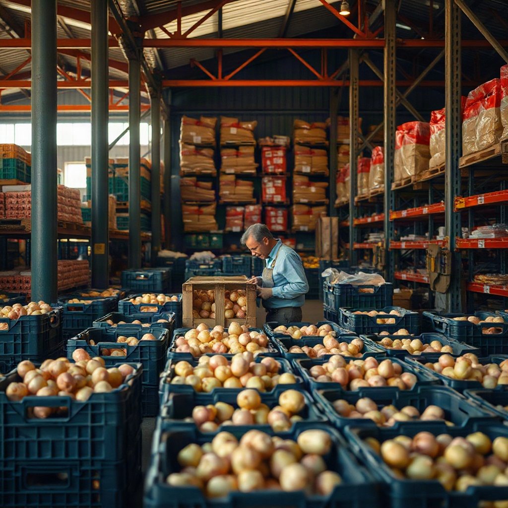

AI POWERED ONION ANALYSIS
Upload an onion image and let our AI analyze its quality, freshness and possible defects.

HOW IT WORKS
Take a clear photo of your onion using your phone camera or upload an existing image.
Our trained model analyzes the image for freshness, defects, and quality indicators.
Receive an instant verdict — healthy or defective — with a confidence score.
AI POWERED
JPG, PNG up to 10MB
QUALITY RESULTS

● Good Quality

● Needs Attention
DATA ANALYTICS
Inspections
Onions Analyzed

ABOUT PYAZLENS
PyazLens uses artificial intelligence and computer vision to help farmers, buyers and suppliers understand onion quality faster.
Our system can detect visible defects, estimate quality and provide useful insights.
GET STARTED
Analyze onion quality anytime using AI-powered technology.